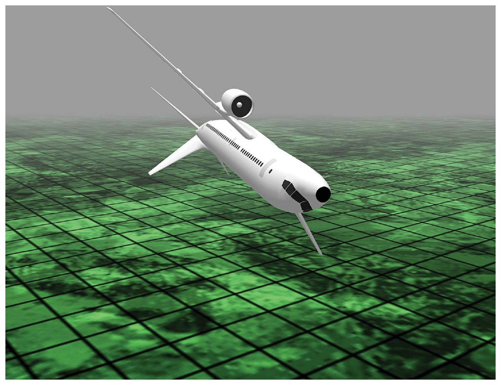

Lesson 14: Startle, Surprise and Spatial Disorientation
Learning objectives
- Distinguish startle from surprise and describe their effects on performance.
- Describe the main vestibular and visual illusions that lead to upsets.
- Apply strategies to manage startle and disorientation.
At night, without a visible horizon, trust the instruments.
Startle and surprise
- Startle is an automatic physical reflex to a sudden, intense event — a loud warning, a bang, a violent jolt. It lasts seconds and can cause an involuntary movement on the controls.
- Surprise is a mental reaction to something unexpected: the situation does not match what you thought was happening. It can last much longer.
Together they can cause stress, tunnel vision, freezing, an inappropriate instinctive reaction (such as pulling back), or a delay in recognising what is happening. Investigators have found these effects in many LOC-I accidents.

Managing startle and surprise
- Expect the unexpected — brief threats, think through "what if", and practise unusual situations in the simulator.
- Control the first reaction — keep inputs small, avoid sudden large movements, and breathe.
- Re-establish the picture — look at the attitude indicator first, then speed, altitude and vertical speed. Say what you see.
- Act on a plan — apply the trained recovery or procedure once the situation is recognised.
Spatial disorientation
Without visual references, the body's balance organs are easily misled. The most dangerous illusions in transport flying are:
- Somatogravic illusion — acceleration feels like a nose-up pitch; deceleration feels like nose-down. Strongest during go-arounds and night take-offs over dark terrain or water.
- Somatogyral illusions — "the leans": a slow roll is not felt, and correcting it feels like a bank the other way. In the graveyard spiral, a sustained, unfelt bank becomes a descending spiral, and pulling back only tightens it.
- Visual illusions — a sloping cloud deck taken as the horizon; lights on the ground confused with stars; the "black hole" approach over dark terrain.
When sensations and instruments disagree, believe the instruments. Cross-check both attitude indicators and the standby instrument. The pilot monitoring calls out any deviation in pitch, bank or vertical speed.
Key takeaways
- Startle is a reflex lasting seconds; surprise is a mental mismatch that can last longer.
- Manage startle: small inputs, breathe, attitude first, then act on a plan.
- Somatogravic illusion: acceleration feels like pitching up — dangerous in night go-arounds.
- When senses and instruments disagree, believe the instruments.
Knowledge check
During a night go-around with high thrust, the pilot feels the aircraft is pitching up steeply. What is the likely cause?